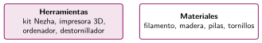
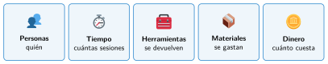

El equipo y los recursos
🤔 Pienso5 min
Qué hago aquí: Piensa un momento y contesta con lo que ya sabes. No pasa nada si no lo sabes: es para empezar.
Marca lo que mejor se te da.
📖 Leo y aprendo15 min
Qué hago aquí: Lee despacio, mira los dibujos y los ejemplos, y quédate con la idea clave del final.
Un proyecto en grupo sale bien si cada persona sabe qué hacer.


✏️ Hago25 min
Qué hago aquí: Haz las actividades en orden. Empieza siempre por las básicas.
Escribe H (herramienta) o M (material): filamento destornillador pilas impresora 3D tornillos
Repartid los tres papeles del equipo. Escribid el nombre de cada persona.
Calcula el coste de una pieza de 60 g de PLA, a 2 céntimos el gramo.
Haced la hoja de recursos del robot regador: tareas, herramientas y materiales, y quién hace cada una.
✏️ Puedes responder escribiendo, con un dibujo o un esquema, o contándolo en voz alta.
🚀 Amplío (si quieres saber más)
Qué hago aquí: ¿Has terminado? Lee la curiosidad o elige el reto. Es voluntario.
Hay una impresora 3D para cinco grupos y cada pieza tarda dos horas. ¿Cómo os organizaríais? Proponed una solución.
✅ Compruebo5 min
Qué hago aquí: Contesta sin mirar la ficha y marca cómo lo llevas.